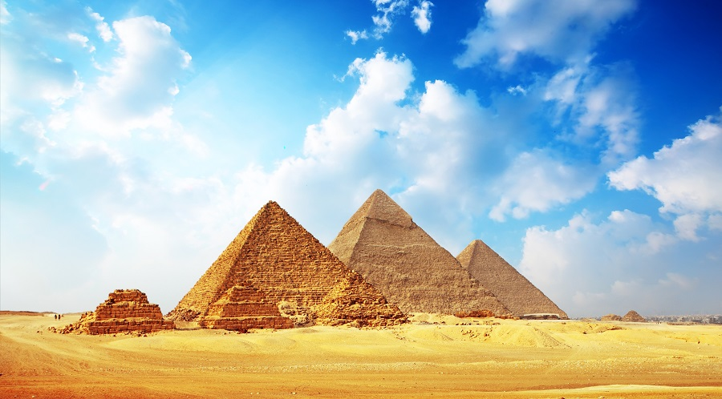
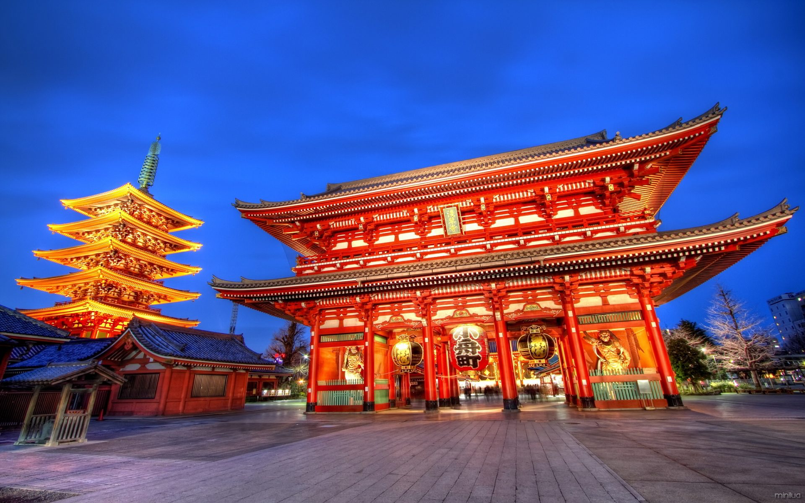

|  |
Piramides de Egipto en el Valle de los ReyesLas pirámides de Egipto son un enigma para la sociedad, aunque no siempre estuvieron en el ojo del mundo. Despojadas de parte de su belleza a lo largo de la historia, las pirámides fueron cubiertas por el velo del silencio por largo tiempo, al menos para el mundo occidental.Los antiguos egipcios creían que sus faraones eran auténticos dioses. por la cual practicaban la momificación. |
Templo de SensojiEl Templo de Sensoji é um antigo templo budista localizado em Tóquio no Japão. É o mais antigo templo da cidade e um dos mais significativos, pois é dedicado a Bodhisattva Kannon, um ícone da religião budista. A presença de turistas aumenta consideravelmente durante as festividades de réveillon. Para atender às multidões que visitam o templo, nas imediações da área existem muitas lojas tradicionais e restaurantes que oferecem pratos tradicionais do Japão.
|  |